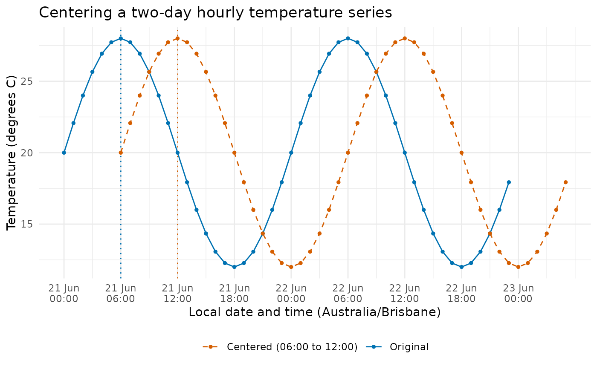

Shift each timestamp so that its nearest sunrise, sunset, or fixed local time falls at a chosen local clock time on the event's calendar date. Timestamps exactly halfway between two events use the later event. The shift is measured in elapsed seconds.
Usage
center_time(timestamps, as = 12, to = c("rise", "set"), ...)Arguments
- timestamps
A non-empty
POSIXctvector. Non-missing values must be finite. Its time zone applies to the whole vector.- as
The desired local clock time of the event, in decimal hours from midnight, in
[0, 24). Defaults to noon.- to
"rise"(default),"set", or a single numeric local clock time in decimal hours from midnight, in[0, 24).- ...
Additional arguments passed to
sun_rise_set(), such aslatitude,longitude, andangle. The time zone is taken fromtimestampsand must not be supplied here. No additional arguments are accepted whentois numeric.
Value
A POSIXct vector of the same length and time zone as timestamps,
in the original order, with missing timestamps returned as missing.
If all timestamps are missing, no solar events are calculated and
arguments passed to sun_rise_set() are not validated.
If a required local clock time does not exist
because of a time zone transition, an error is raised. Ambiguous local
clock times are resolved according to the platform's time zone rules.
Solar events are calculated for each input date and its adjacent dates;
errors from sun_rise_set(), including polar day or night, are propagated.
Examples
times <- as.POSIXct(c("2021-06-21 06:00", "2021-06-21 18:00"),
tz = "Australia/Brisbane")
center_time(times, to = "rise", latitude = -27.5, longitude = 153)
#> [1] "2021-06-21 11:48:08 AEST" "2021-06-21 23:48:08 AEST"
center_time(times, to = 6)
#> [1] "2021-06-21 12:00:00 AEST" "2021-06-22 00:00:00 AEST"
# Two days of hourly temperatures, with the 06:00 peak centered at noon.
hours <- 0:47
times <- as.POSIXct("2021-06-21 00:00:00", tz = "Australia/Brisbane") +
hours * 3600
temperature <- 20 + 8 * sin(2 * pi * hours / 24)
centered <- center_time(times, to = 6, as = 12)
if (requireNamespace("ggplot2", quietly = TRUE)) {
series <- rbind(
data.frame(time = times, temperature = temperature, series = "Original"),
data.frame(time = centered, temperature = temperature,
series = "Centered (06:00 to 12:00)")
)
reference <- data.frame(
time = times[1] + c(6, 12) * 3600,
series = c("Original", "Centered (06:00 to 12:00)")
)
ggplot2::ggplot(series, ggplot2::aes(x = time, y = temperature,
colour = series, linetype = series)) +
ggplot2::geom_vline(data = reference, ggplot2::aes(xintercept = time,
colour = series),
linetype = "dotted", show.legend = FALSE) +
ggplot2::geom_line() +
ggplot2::geom_point(size = 1) +
ggplot2::scale_colour_manual(values = c("Original" = "#0072B2",
"Centered (06:00 to 12:00)" = "#D55E00")) +
ggplot2::scale_linetype_manual(values = c("Original" = "solid",
"Centered (06:00 to 12:00)" = "dashed")) +
ggplot2::scale_x_datetime(breaks = seq(times[1], max(centered), by = "6 hours"),
date_labels = "%d %b\n%H:%M",
timezone = "Australia/Brisbane") +
ggplot2::labs(title = "Centering a two-day hourly temperature series",
x = "Local date and time (Australia/Brisbane)",
y = "Temperature (degrees C)", colour = NULL, linetype = NULL) +
ggplot2::theme_minimal() +
ggplot2::theme(legend.position = "bottom")
}
